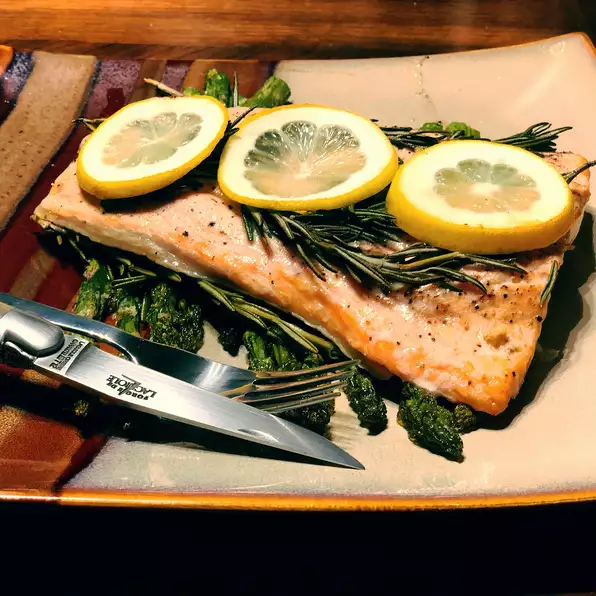

Salmon Fry

Description
Salmon is a hefty, fatty, robust fish, it can stand up to big bold flavors without being overwhelmed. In fact, salmon needs big bold flavors. That's where our tasty lemon-garlic sauce comes in!
Salmon fried with lemon and pepper is a very tasty and healthy dish that is easy to prepare.
Ingredients
- 1 lemon, thinly sliced
- 4 sprigs fresh rosemary
- 2 salmon fillets, bones and skins removed
- Coarse salt to taste
- 1 tablespoon olive oil, or as needed
Steps
- Preheat the oven to 400 degrees F (200 degrees C).
- Arrange half the lemon slices in a single layer in a baking dish. Layer with 2 sprigs rosemary, and top with salmon fillets. Sprinkle salmon with salt, layer with remaining rosemary sprigs, and top with remaining lemon slices. Drizzle with olive oil.
- Bake 20 minutes in the preheated oven, or until fish is easily flaked with a fork